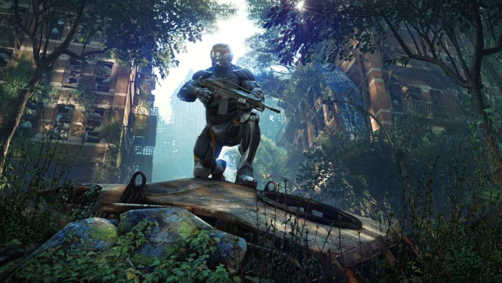
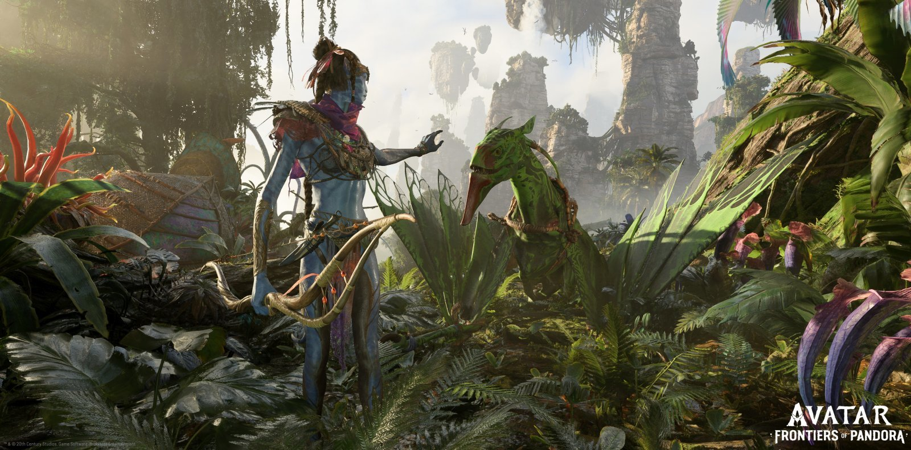

Grafika Komputerowa
Grafika komputerowa to dziedzina łącząca sztukę z technologią, zajmująca się tworzeniem i edycją obrazów cyfrowych. Obejmuje grafikę rastrową, wektorową i 3D, wykorzystywaną w filmach, grach, animacjach, reklamach i stronach internetowych.


Zalety i Wady
- ✅ **Skalowalność bez utraty jakości
- 📂 Mały rozmiar plików
- ✏️ Łatwa edycja i modyfikacja
- 🖨️ Idealna do druku
- 🎨 Wszechstronność zastosowania
- 🔄 Możliwość konwersji na grafikę rastrową
- 📄 Popularne formaty (SVG, AI, EPS, PDF
- 🖼️ Wysoka jakość przy każdej rozdzielczości
- 📏 Precyzyjne kształty i linie
- ❌ Brak efektu pikselizacji